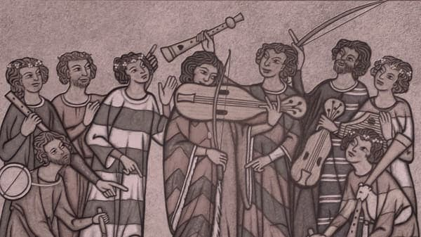
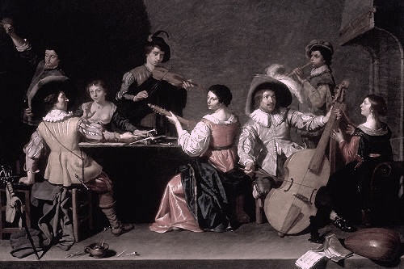

The Period and Its Characteristics
|
| Name of Period |
Picture of the Period |
Characteristics about the Period |
| Medieval Period |
 |
- Monophony: Until the late Medieval period, most Medieval music took the form of monophonic chant.
- Standardized rhythmic patterns: Most Medieval chants followed rhythmic modes that brought a uniform sensibility to the era.
- Ligature-based music notation: The musical notation of the Medieval era does not resemble the notation used today.
- Troubadours and trouvères: Troubadours were traveling musicians who accompanied their own singing with string instruments.
- Limited instrumental music: An overwhelming percentage of the Medieval canon is vocal music.
|
| Renaissance Period |
 |
- Polyphony: Renaissance music emphasized multiple voices singing in a polyphonic style.
The same was true for multi-part instrumental music.
- Tonal music: Tonal music places strong emphasis on cadences at the end of sections or entire pieces.
this way a listener’s ear can be anchored in a particular key.
- Increased risk-taking: Early Renaissance music, like that of Guillaume Dufay, maintained the harmonic rules of Medieval music
from the late Middle Ages.
|